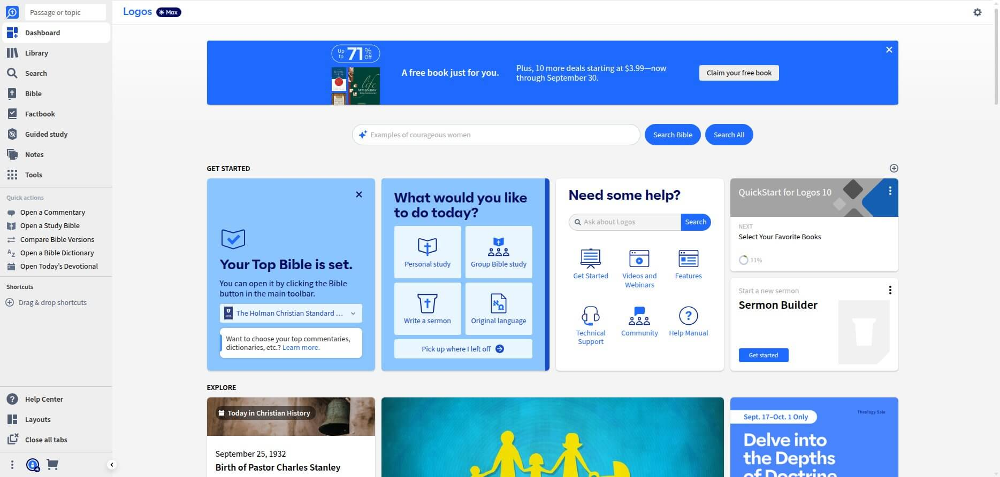
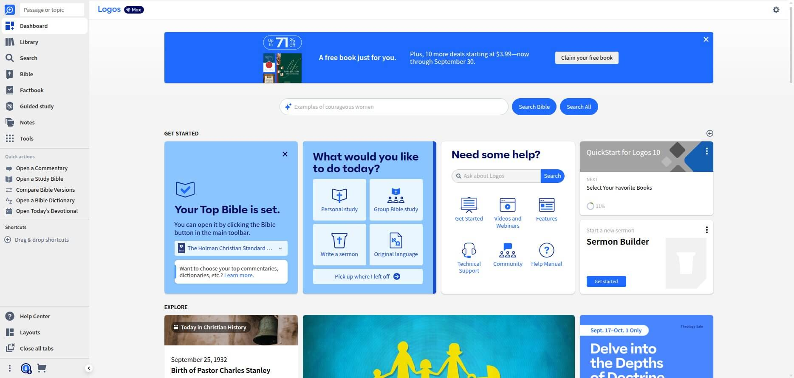

Why Logos Bible Software is the Game-Changer You Need
From the free version to the full power of Logos, here's what makes this software absolutely indispensable for serious Bible study...
Revolutionary AI Features
Smart Search with natural language queries, AI-powered Smart Synopsis that compiles research in seconds, and the Bible Study Builder that creates discussion questions automatically. This isn't just software—it's like having a research assistant that never sleeps.
Massive Digital Library
Access over 120,000 Christian books from 500+ publishers. Commentaries, theological works, church history—everything you'd find in a seminary library, instantly searchable and cross-referenced. No more hunting through physical books!
Save Hours Every Week
Pastors report saving 3-5 hours per sermon with automated sermon outlines, instant cross-references, and AI-generated illustrations. One pastor said: "I can prepare a complete sermon without setting foot in the library."
Perfect Sync Everywhere
Start your study on desktop, continue on mobile, finish on tablet. Notes, highlights, and progress sync instantly across all devices. Your entire library travels with you—even offline on desktop.
Academic-Grade Research
Original language tools, grammar and syntax analysis, and automatic citation generation. PhD students call it "indispensable for writing papers"—now you can access the same scholarly resources.
Instant Insights
Click any word for instant definitions, cross-references, and historical context. The software connects dots you'd never see otherwise, revealing deeper meanings and connections throughout Scripture.
From the Free Version to Full Power
I've been using the free version and it's incredibly powerful. But after researching what the paid tiers offer, I can see why serious students and pastors consider it essential. The AI features alone are worth the investment.
Experience the Difference Yourself 
